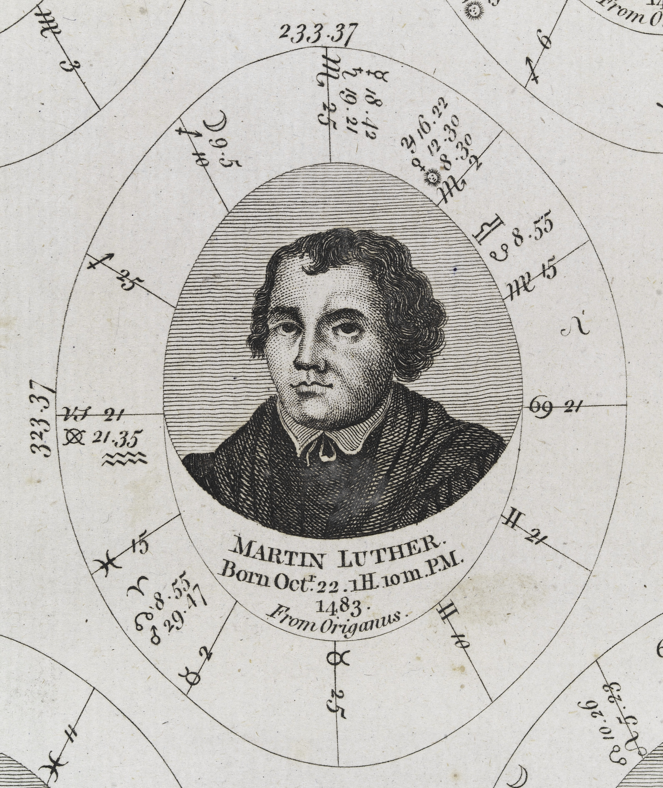
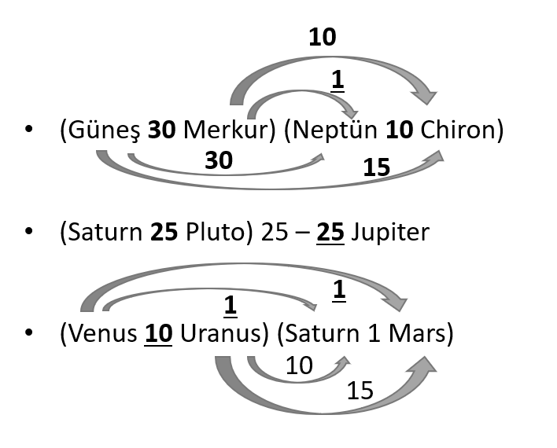

A Profound Chart Analysis of the Influential Reformer: Martin Luther
Martin Luther: A Reformist Priest and Astrological Profile

Let's take a look at the birth chart of Martin Luther to understand more about him. This astrological analysis will shed light on Luther's personal traits, worldview, and his role in the significant era of the Protestant Reformation.
Birth and Life:
Born in 1483, German reformist priest Martin Luther initiated the Protestant Reformation by challenging the rules and corruptions of the Catholic Church. Luther became the pioneer of Protestantism, and the Lutheran branch is synonymous with his theology. He was also an author and professor, having taught philosophy and Sacred Scriptures at the university, portraying a powerful and influential preacher.
Emphasised Aspects of the Birth Chart Regarding Traditional Methods
Sun, Moon, and Rising Trinity:
Rising Leo, Sun Scorpio, and Moon Aries. This trinity shapes Luther's approach to life as inspiring, warm, generous, and assertive.
Luther is self-centric, aiming to showcase what matters to him, utilizing his creativity, and organizing effectively by exploring beyond the apparent. His life's purpose revolves around asking the "why" question and seeking transformation, emphasizing the importance of embracing life's natural cycles and learning a healthy power theme.
Emotional Aspects and Initiative:
With the Moon in Aries, Luther's emotional need is to pursue desires freely and spontaneously initiate new endeavors. His reflex is to eliminate things that hinder him, displaying potential for angry reactions.
Both the Rising and Moon's ruler are in Scorpio, and their ultimate ruler is Mars in Scorpio. Luther's impulses are strong and directed toward a purpose. He can strategically tackle crises, unite with the energies of the masses, take initiative in solving complex issues, and remains resilient. Luther does not give up easily, operates discreetly, and harbors a drive to reveal the truth.
A Focal Point: Moon
The focal Moon in the southern hemisphere desires to spontaneously follow its wishes and derives the power to eliminate obstacles from Mars in Scorpio. In the 9th house, this is expressed through involvement in matters of religion, philosophy, higher education, and ethical issues. Luther finds joy in being part of religious groups.
The Moon is also in the first quarter, indicating Luther's impatient and determined nature. He moves to make room for his own thoughts and projects, even in times of no apparent tension, creating when needed and drawing crises towards himself.
Other Emphasized Themes in the Chart:
A strong emphasis on fixed qualities: resistant, stubborn, and assertive.
Themes of the 3rd and 4th houses: learning, teaching, written expression are highlighted. Luther leaves a legacy of knowledge and reputation. The later stages of his life and his inner world, roots, are significant.
Mercury-Neptune conjunction with a 3-minute orb in Sagittarius: Mercury expresses ideals, with elements of religion and philosophy. Luther desires to preach and possesses a spiritual and intuitive mind.
Mars in Libra conjunct Jupiter, one of the most emphasized planets, shows a strong sense of justice. Fairness and impartiality are crucial principles for Luther.
Saturn and Venus in a close conjunction on the IC suggest Luther might struggle to find inner peace due to extremes and power struggles, but overcoming these challenges serves as a life lesson.
In conclusion, with approximately 1 billion adherents today, does the emphasized astrological themes truly capture the essence of the individual who laid the foundation for Protestantism? To better understand Luther's life story, delving into how these astrological elements correlate with historical events and personal experiences is essential. Exploring how Luther's astrological influences relate to the Protestant Reformation and his impact will allow a deeper exploration of Luther's legacy.
A New Perspective through Harmonics
Mercury Neptune Conjunction:
In the analysis below, you can explore the harmonic aspects of the Mercury-Neptune conjunction:
Sun 1st (distant aspect) and 30th (close aspect) harmonics
Moon 3rd harmonic (close aspect)
Venus 27th harmonic (very close aspect)
Uranus 1st harmonic (distant aspect)
Pluto 32nd harmonic (close aspect)
Chiron 10th harmonic (very close aspect)
When only considering traditional aspects, we might overlook the angles of the Sun, Venus, Pluto, and Chiron. Focusing solely on the conjunction of the Sun and Uranus and the triangular aspect of the Moon might hinder a comprehensive understanding of the importance of the Mercury-Neptune conjunction. The aspects of the luminaries (Sun and Moon) are particularly significant.
In the 1st harmonic, the Sun forms a conjunction with a distant angle, while in the 5th harmonic, which is an underlying harmonic of the 30th, it forms a conjunction with a very close angle. The 5th harmonic is strongly emphasized in Martin Luther's chart.
The connection of the Mercury-Neptune conjunction to Pluto through the 32nd harmonic (a subharmonic of the 2nd) is powerful. A deeply manifested conflicted aspect is revealed here, depicting the struggle to fight for ideals (Neptune) in the name of justice (Pluto in Libra) concerning beliefs (Sagittarius). Throughout Luther's life, this conflicted aspect played an active role in his life story. The conjunction of Mercury and Neptune in Sagittarius signifies the prominence of religion and laws in his thought system, the prominence of a mind with high ideals, and the dissolution of old concepts and systems related to beliefs.
This conflict is more evident when considering the second harmonic aspects below:
Sun-Moon 8th harmonic (distant aspect)
Moon-Uranus 16th harmonic (close aspect)
Venus-Mars 32nd harmonic (close aspect)
Venus-Chiron 8th harmonic (close aspect)
Saturn-Chiron 8th harmonic (very close aspect)
Impact of the 5th Harmonic Aspects in Luther's Chart:

The 5th harmonic is associated with the ability to change the world, create new systems, and thrive on chaos to establish order. Cities can be founded, new orders established, and new technologies discovered. The created order brings stability to the system. To recall the details of the 5th harmonic, you can read my article here
In Luther's life story, we observe the establishment of a new order. During his journey to Rome in 1510, Luther witnessed the actions of the Catholic Church and was horrified. Papal envoys were selling documents for the reconstruction of St. Peter's Church in exchange for money, promising forgiveness for sins. Pluto triggered Luther's Mercury directly, labeling these actions as fraudulent. Luther rejected the teachings and practices of the Roman Church, particularly abhorring the selling of indulgences. He declared that people could only be saved from sin by God's grace.
Luther challenged this chaotic order through the triggering of the following harmonic aspects: (Please also see the emphasised pattern in the image above)
Mercury-Neptune-Chiron 10th harmonic (very close aspect)
Venus-Uranus 10th harmonic (close aspect)
Mars-Uranus 15th harmonic (distant aspect)
Mars-Pluto 20th harmonic (close aspect)
Mars-Chiron 5th harmonic (distant aspect)
Jupiter-Saturn 25th harmonic (distant aspect)
Jupiter-Pluto 25th harmonic (very close aspect)
Saturn-Uranus 10th harmonic (distant aspect)
Saturn-Pluto 25th harmonic (close aspect)
Luther later went on trial, stating, "Unless I am convinced by Scripture and by plain reason (the mind), I do not accept the authority of the pope." The conjunction of Mars (ruler of the Ascendant's ruler), Pluto (resistance to oppression - Libra's fight for justice), and Saturn (ruler of the 7th house - legal matters) form a tight cluster in the 5th harmonic. Saturn, Jupiter, and Pluto converge in the 5th harmonic. Considering Jupiter's representation of religion and Pluto's transformation, we can interpret Luther's efforts in the religious realm as restructuring and creating transformation through the 5th harmonic.
Luther continued to lead the charge against the Catholic Church, notably with the publication of his theses in 1517, marking the beginning of the Reformation. The story is filled with power struggles: in 1521, the pope excommunicated Luther, ordering the destruction of his books (Mercury-Pluto 32nd harmonic).
Luther was later summoned to court, stating, "I cannot and will not recant anything since it is neither safe nor right to go against conscience. May God help me. Amen." The tight cluster of Mars (ruler of the Ascendant), Pluto (resistance to oppression - Libra's fight for justice), and Saturn (7th house ruler - legal matters) in the 5th harmonic indicates a firm stand against submission.
Saturn, Jupiter, and Pluto converge in the 5th harmonic, with Jupiter representing religion and Pluto symbolizing transformation. In the realm of religion, Luther aimed to create structure and transformation, using the 5th harmonic to establish a new order. Luther continued to lead the charge against the Catholic Church. His last publication before his death in 1545 was titled "Against the Papacy in Rome, Founded by the Devil." As seen, Luther's life was a constant struggle.
Note: This is a general interpretation based on harmonic aspects and should be approached with consideration of the broader astrological context and historical events.